ELK Log Visualization
В данном практическом занятии рассмотрим возможности визуализации логов собственного приложения используя ELK стек.
Vagrant
Для работы будем использовать следующий Vagrantfile:
Vagrant.configure("2") do |config|
config.vm.define "logging" do |c|
c.vm.provider "virtualbox" do |v|
v.cpus = 2
v.memory = 4096
end
c.vm.box = "ubuntu/lunar64"
c.vm.hostname = "logging"
c.vm.network "forwarded_port", guest: 8888, host: 8888
c.vm.network "forwarded_port", guest: 8889, host: 8889
c.vm.provision "shell", inline: <<-SHELL
apt-get update -q
apt-get install -yq docker.io docker-compose-v2
usermod -a -G docker vagrant
SHELL
end
end
Данная конфигурация установит на виртуальную машину docker и docker compose, с помощью которых в дальнейшем будут развернуты остальные компоненты.
Application
Создадим простое приложение main.go на golang для отправки логов по протоколу
syslog в формате json:
package main
import (
"io"
"log/slog"
"log/syslog"
"math/rand"
"net/http"
"os"
"time"
)
func main() {
logstash, err := syslog.Dial("udp", "logstash:5044", syslog.LOG_INFO, "test")
if err != nil {
slog.Error("error syslog dial", "error", err)
return
}
slog.SetDefault(slog.New(slog.NewJSONHandler(io.MultiWriter(os.Stdout, logstash), nil)))
slog.Info("start")
http.Handle("/", http.HandlerFunc(func(w http.ResponseWriter, r *http.Request) {
start := time.Now()
if rand.Intn(10) > 0 {
w.WriteHeader(200)
w.Write([]byte("OK\n"))
slog.Info("OK", "user", r.UserAgent(), "path", r.URL.Path, "duration", time.Since(start), "code", 200)
return
}
w.WriteHeader(500)
w.Write([]byte("NE OK\n"))
slog.Error("NE OK", "user", r.UserAgent(), "path", r.URL.Path, "duration", time.Since(start),"code", 500)
}))
http.ListenAndServe(":8080", nil)
}
Данное приложение принимает http запросы и с некоторой вероятностью возвращает ошибку.
В конце обработки выводится событие в стандартный вывод, а также отправляется
в logstash. Логируются следующий параметры: текст, уровень важности, код возврата,
юзер агент и время обработки. Также добавим к нему Dockerfile:
FROM golang:1.21 as build
WORKDIR /src
COPY main.go /src/main.go
RUN go mod init example \
&& go mod tidy \
&& CGO_ENABLED=0 go build -o /bin/app ./main.go
FROM scratch
COPY --from=build /bin/app /app
CMD ["/app"]
Compose
Опишем компоненты ELK стека для нашего приложения и саму сборку приложения в
compose.yaml файле:
version: '3'
services:
elasticsearch:
image: elasticsearch:7.9.1
container_name: elasticsearch
ports:
- "8889:9200"
- "9300:9300"
volumes:
- test_data:/usr/share/elasticsearch/data/
- ./elasticsearch.yml:/usr/share/elasticsearch/config/elasticsearch.yml
environment:
- discovery.type=single-node
- http.host=0.0.0.0
- transport.host=0.0.0.0
- xpack.security.enabled=false
- xpack.monitoring.enabled=false
- cluster.name=elasticsearch
- bootstrap.memory_lock=true
- ES_JAVA_OPTS=-Xms256m -Xmx256m
networks:
- elk
logstash:
image: logstash:7.9.1
container_name: logstash
user: "0"
ports:
- "5044:5044/udp"
- "9600:9600"
volumes:
- ./logstash.conf:/usr/share/logstash/pipeline/logstash.conf
- ./logstash.yml:/usr/share/logstash/config/logstash.yml
- ls_data:/usr/share/logstash/data
- /var/lib/docker/containers:/var/lib/docker/containers
networks:
- elk
depends_on:
- elasticsearch
kibana:
image: kibana:7.9.1
container_name: kibana
ports:
- "8888:5601"
volumes:
- ./kibana.yml:/usr/share/kibana/config/kibana.yml
- kb_data:/usr/share/kibana/data
networks:
- elk
depends_on:
- elasticsearch
app:
image: test
container_name: app
build: .
ports:
- 8080:8080
networks:
- elk
depends_on:
- logstash
networks:
elk:
driver: bridge
volumes:
test_data:
ls_data:
kb_data:
А также конфигурации для этих компонентов.
elasticsearch.yml:
cluster.name: "elasticsearch"
network.host: localhost
logstash.yml:
http.host: 0.0.0.0
xpack.monitoring.elasticsearch.hosts: ["http://elasticsearch:9200"]
kibana.yml:
server.name: kibana
server.host: "0"
elasticsearch.hosts: [ "http://elasticsearch:9200" ]
monitoring.ui.container.elasticsearch.enabled: true
logstash.conf:
input {
syslog {
port => 5044
}
}
filter {
json {
source => "message"
}
mutate {
remove_field => ["message"]
}
}
output {
elasticsearch {
hosts => "http://elasticsearch:9200"
index => "test-logs-%{+YYYY.MM.DD}"
}
}
После чего запустим:
$ docker compose up -d
[+] Running 8/8
✔ Network vagrant_elk Created 0.0s
✔ Volume "vagrant_ls_data" Created 0.0s
✔ Volume "vagrant_kb_data" Created 0.0s
✔ Volume "vagrant_test_data" Created 0.0s
✔ Container elasticsearch Started 0.4s
✔ Container logstash Started 0.9s
✔ Container kibana Started 0.9s
✔ Container app Started 1.2s
Visualization
Проверим работу нашего приложения отправив запрос:
$ curl localhost:8080
OK
$ docker logs app
{"time":"2024-03-31T18:15:30.382334348Z","level":"INFO","msg":"start"}
{"time":"2024-03-31T18:50:27.186771729Z","level":"INFO","msg":"OK","user":"curl/7.88.1","path":"/","duration":7103,"code":200}
И посмотрим результат в kibana на странице
/app/discover, первоначально создав index pattern:
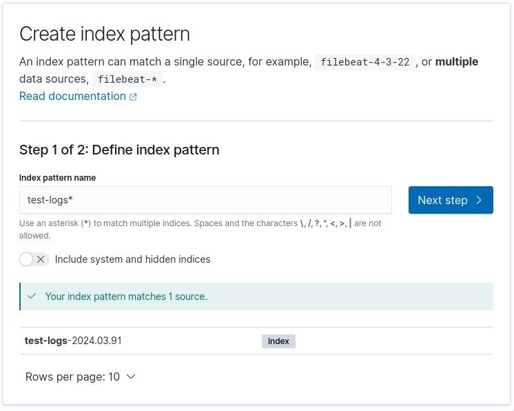
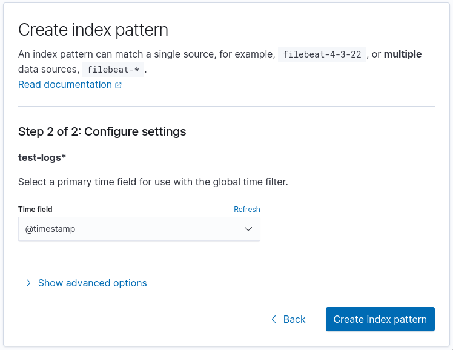
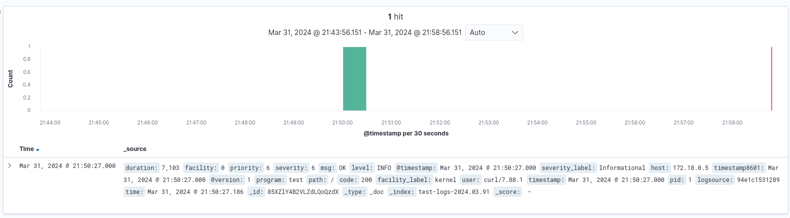
Запустим цикл запросов для генерации логов:
$ while sleep 1;do curl -H "user-agent: user$(($RANDOM%10))" localhost:8080/$(($RANDOM%5));done
OK
OK
OK
OK
OK
OK
OK
OK
OK
NE OK
NE OK
OK
...
В данном цикле мы указываем случайный user-agent от 0 до 9 и путь запрос от 0 до 4.
Выберем в левой панели поля, которые хотим отображать:
level, code, msg, path, user и duration.
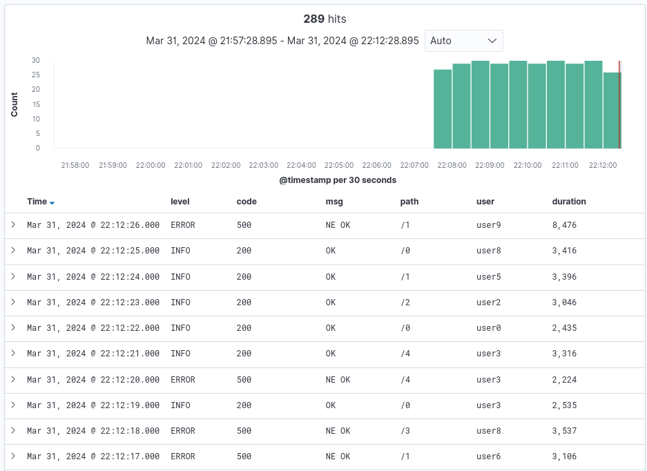
Dashboard
На странице /app/dashboards можно создать дашборд с различной визуализацией событий приложения для анализа его работы. Добавим новый дашборд и новую визуализацию в нем:
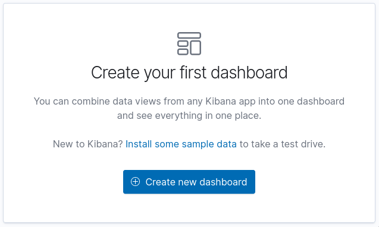 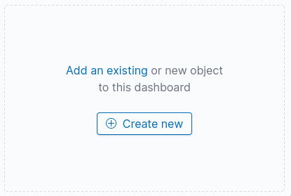
Первую визуализацию добавим типа vertical bar, добавив по оси X - Date Histogram:
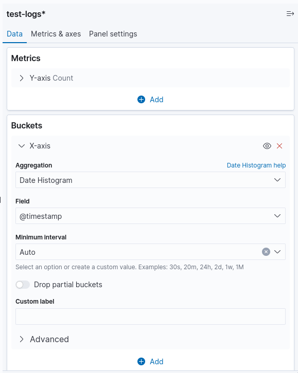
И сохраним:
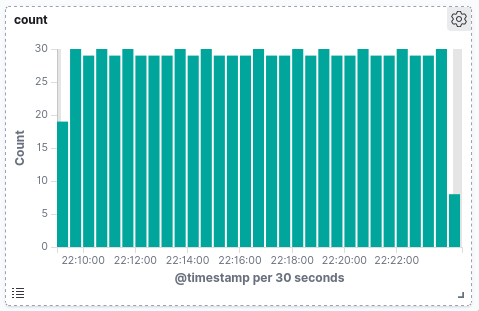
Далее добавим визуализацию для отображения количества событий по уровням, также используя vertical bar, также сделав по оси X - Date Histogram, а по оси Y сделаем агрегации Sum Bucket по уровню логирования:
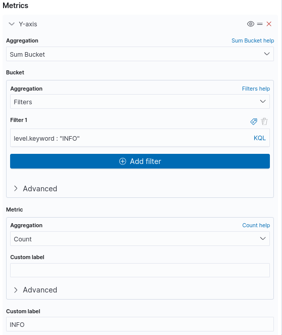 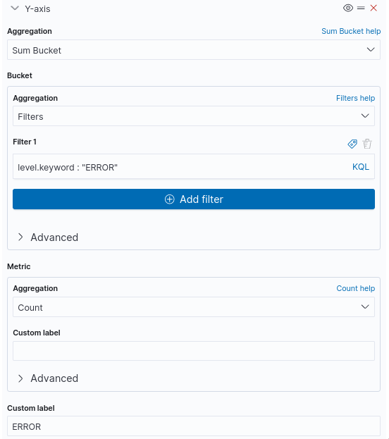
Также добавим понятные цвета и сохраним:
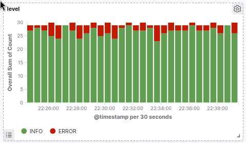
Далее можем отобразить количество сообщений в зависимости от пути запроса, для этого возьмем data table:
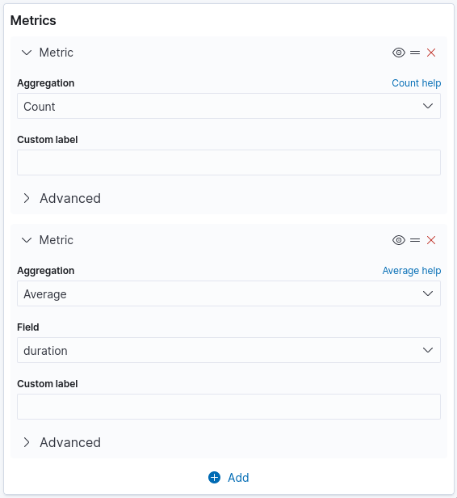 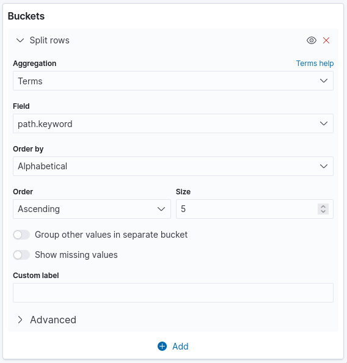
И получим:
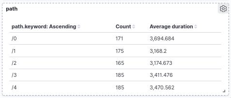
Далее добавим визуализацию в виде pie chart по http кодам:
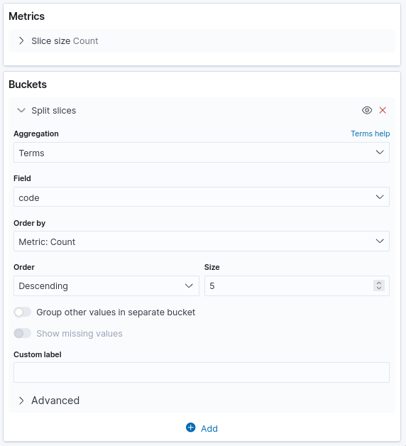 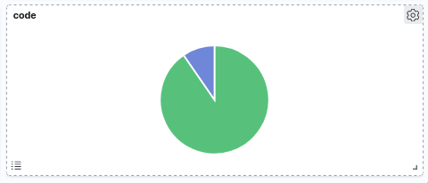
Далее отобразим количество сообщений по разным временам в виде horizontal bar:
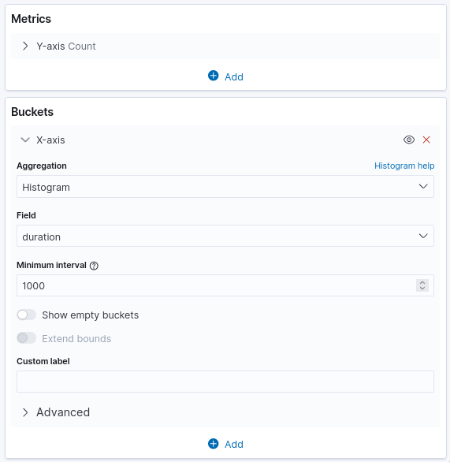 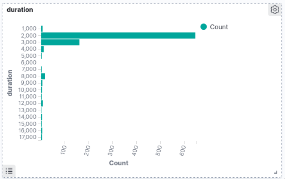
И добавим последнюю визуализацию в виде облака тегов, на котором отобразим какие встречаются user-agent:
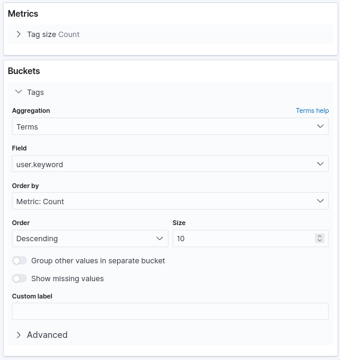 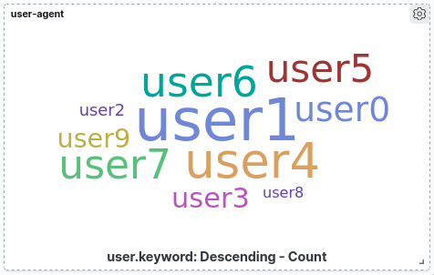
По итогу мы получим дашборд следующего содержимого:
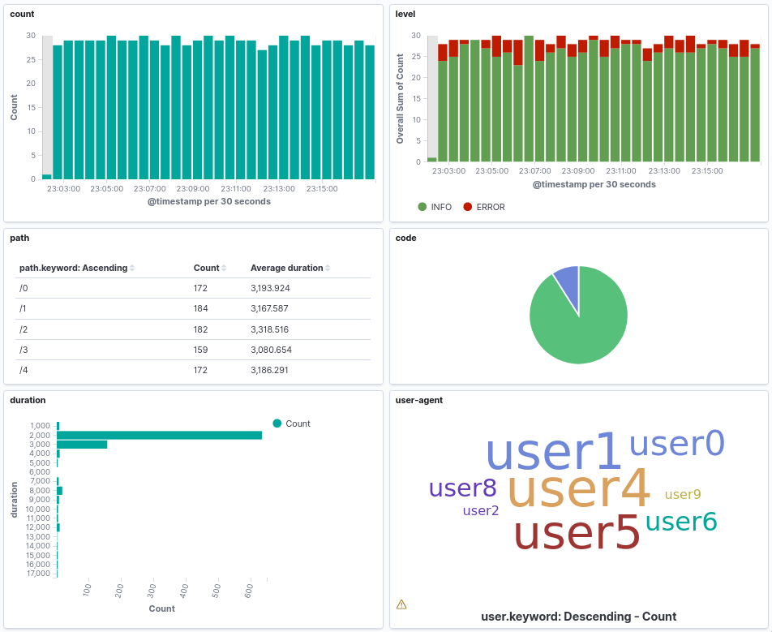
Визуализации позволяют интерактивно менять фильтры кликая по элементам, например,
если кликнуть в pie chart на часть с кодом 500 и в облаке тегов на user1,
то получим дашборд отфильтрованный по данным параметрам:
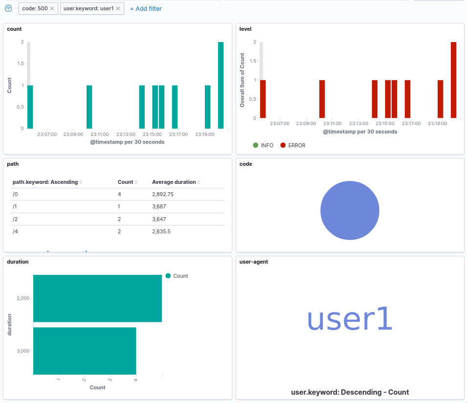